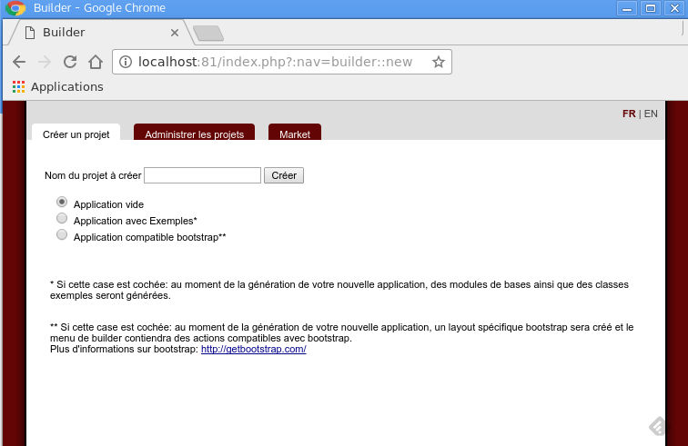
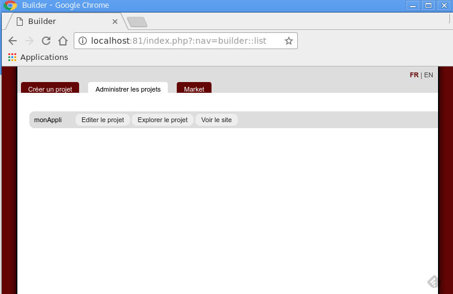
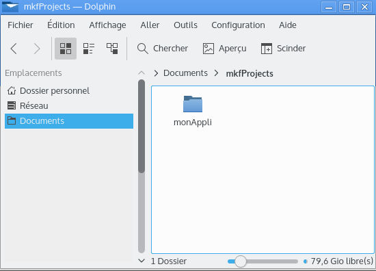
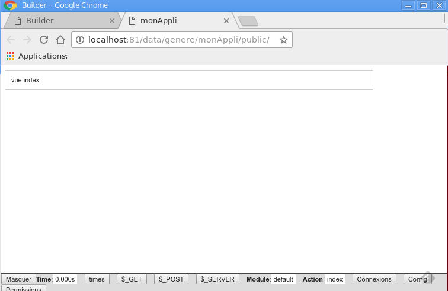
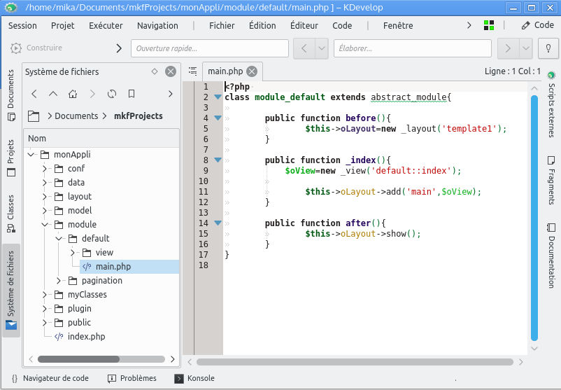

Comment utiliser notre image docker avec le mkframework
Introduction
Nous avons vu dans le précedent tutoriel comment créer une image docker utilisable, voyons comment l'utiliser pour developper une applicationRetour sur l'image qui sera utilisée
Pour rappel notre image contient un serveur web ainsi que le mkframework installé à la racine du répertoire webPréparation de notre espace de travail
Créons un repertoire qui contiendra les applications web que nous allons créerPar exemple, dans votre répertoire Documents, créez mkfProjects
Vous avez ainsi le repertoire Documents/mkfProjects qui contiendra nos applications
Docker permet de "lier" un répertoire du conteneur à l'arborescence de notre ordinateur
Ici l'idée c'est de lier le repertoire Projects/ du mkframework à notre répetoire Document/mkfProjects
Pour cela, il faut utiliser le parametre "-v" ainsi
docker run -d -v /home/mika/Documents/mkfProjects:/var/www/html/Projects/ mkf:latest
Ainsi vous pourrez travailler dans votre repetoire personnel et le framework le prendra en compte
Si vous avez un soucis de droits, pensez à changer les droits de votre répertoire personnel
chmod 777 -R /home/mika/Documents/mkfProjects
note: si, comme moi vous avez déjà un serveur apache qui tourne sur votre ordinateur, vous pouvez changer le port utilisé, par exemple le 81
Le lancerai pour ma part:
docker run -p 81:80 -d -v /home/mika/Documents/mkfProjects:/var/www/html/Projects/ mkf:latest

Créons une application "monAppli"

Et vous verrez dans votre repertoire votre application:

En cliquant sur "voir le site" vous pouvez voir votre application

Vous pouvez ainsi facilement travailler sur votre application
